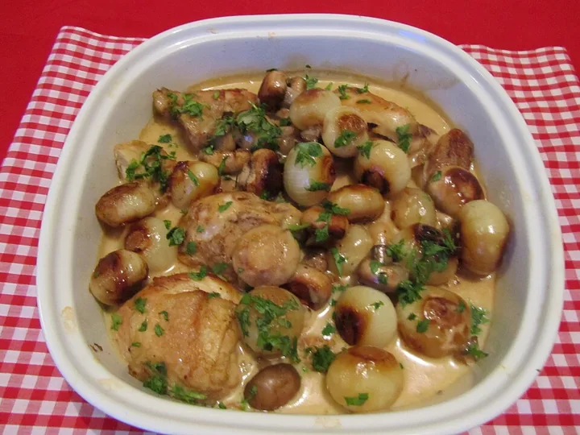
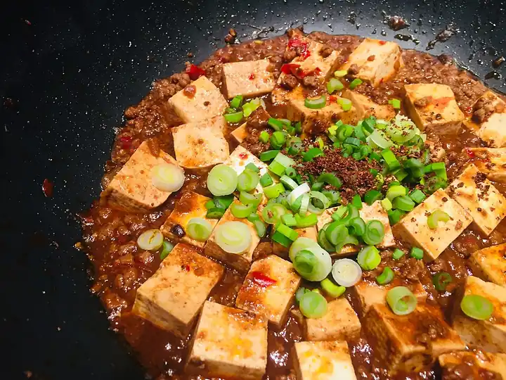

What’s cookable
6 ready from the shelf · 9 need one thing
Ready now

Menemen
Turkish eggs with peppers and tomato
All in25 MIN One pan
Smash Burger
Thin patties, lacy crust, cheese inside
All in20 MIN
Poulet à la Moutarde
Mustard cream chicken
All in45 MIN
One thing away

Shakshuka
Eggs poached in spiced tomato and pepper
Buy red pepper40 MIN
Mapo Tofu
Sichuan tofu, chilli bean paste, numbing pepper
Buy silken tofu30 MIN